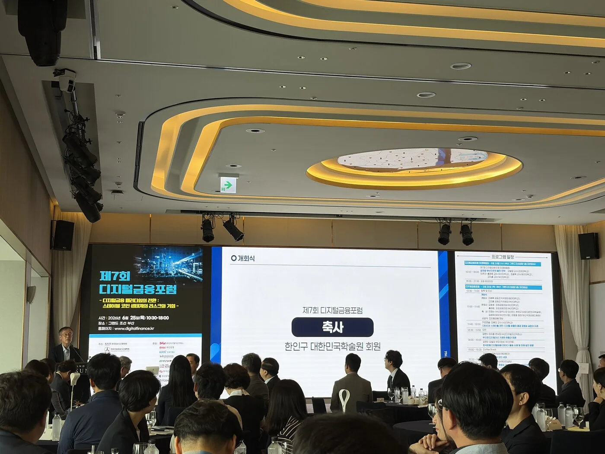
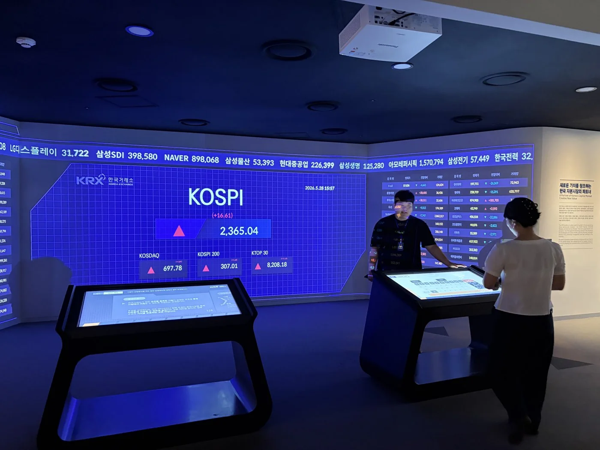
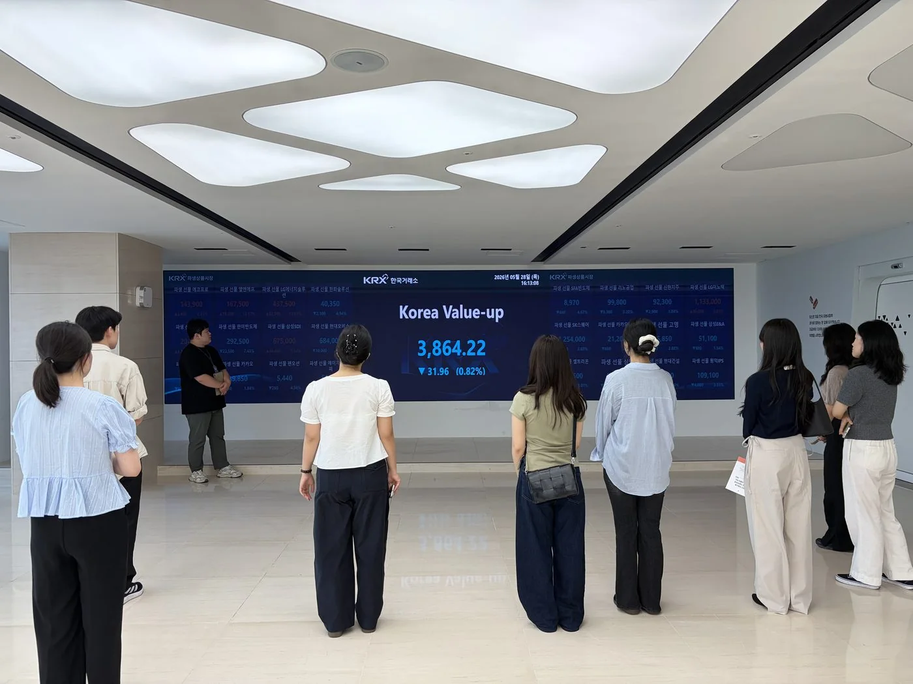
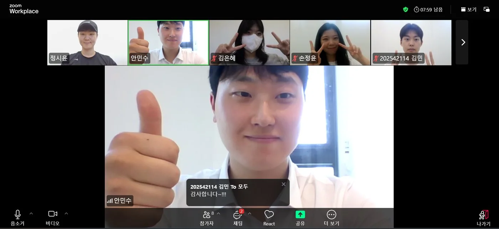

전체 아카이브 검색
어느 페이지에서든 Ctrl + K로 핵심 콘텐츠와 증거 자료를 탐색합니다.
핀로그(FinLog = Finance + Log)는 금융권 취업을 목표로 한 다학제 학습 공동체입니다. 팀은 금융·시사 주제를 함께 학습·토론하고 있으며, 그 결과를 108개 용어 지식베이스·168장 카드뉴스·95쪽 보고서·웹 아카이브로 지속해서 구조화하고 있습니다.
복잡한 금융 정보를 근거와 맥락이 드러나는 콘텐츠로 구조화합니다.
공식 자료 확인, AI 보조, 전공 간 교차 검토를 순차적으로 거칩니다.
108개 지식베이스, 168장 카드뉴스, 95쪽 보고서와 웹 아카이브를 축적했습니다.
상경·비상경 6인이 질문과 검토를 나누며 공동으로 학습하고 발행합니다.
금융 정보는 전문성과 시의성을 함께 요구합니다. 핀로그는 최신성, 논리적 설명, 학습 기록의 지속성이라는 세 과제를 AI 원데이 스프린트와 네 가지 결과물(보고서·카드뉴스·챗봇·블로그) 발행으로 보완했습니다. 정기 모임에서 토론, 원고 작성, 데이터베이스 반영을 하나의 흐름으로 운영합니다.
복잡한 금융 개념을 맥락과 근거가 드러나는 콘텐츠로 정리합니다.
하루 2시간, 토론부터 기록까지 그날 안에 완결합니다.
은행, 증권사, 금융공기업 등 금융권 취업을 향한 실전 역량.
단순한 찬반을 넘어, 전공별 관점을 반영한 이해관계자 역할 토론으로 논의를 확장합니다. 전공자가 분석의 구조를 세우고 비전공자가 전달의 명료성을 점검하는 교차 검토 과정을 거칩니다.
자본시장 구조·유동성·정책 파급 효과를 분석해 탄탄한 논리적 골격을 세웁니다.
소비자 보호·금융 윤리 관점을 더하고, 전문 용어를 비전공자도 이해할 수 있는 언어로 정리합니다.
AI는 자료 탐색, 반론 도출, 문장 점검을 돕는 보조 수단으로 활용합니다. 프롬프트 기법을 정기적으로 공유하되, 사실 판단과 최종 검토의 책임은 사람이 맡는다는 원칙을 지킵니다.
토론이 한쪽으로 치우치지 않도록 AI로 반론과 누락된 관점을 탐색하고, 팀이 논리의 타당성을 다시 검토합니다.
설명이 어려운 전문용어에 적합한 비유와 사례를 탐색해, 비전공자의 이해 가능성을 높입니다.
완성한 글을 비전공자 관점에서 검수해, 불필요한 전문용어와 모호한 문장을 정비합니다.
빅테크 독점·탄소세·기준금리·세대갈등으로 논술 체계 확립
공급망 정책·기술특례상장·공매도·시장 인프라 현안 종합
가상자산·블록체인·스테이블코인·CBDC·토큰증권
KRX 자본시장역사박물관 견학과 현직자 4인 인터뷰
대체거래소·밸류업·ESG 공시·거버넌스·파생상품 분석
보고서·챗봇·카드뉴스·웹 아카이브 제작과 검증
각 주제는 'A4 분석 보고서 + 3분 핵심 해설 + 전공자×비전공자 토론'으로 정리했습니다.
네트워크 효과와 전환비용이 커질수록 플랫폼의 수수료·노출 정책이 시장경쟁에 미치는 영향도 확대된다.
탄소 배출의 사회적 비용을 가격에 반영할 때 산업 경쟁력과 분배 부담을 함께 검토해야 한다.
기준금리 변화는 대출·환율·자산가격을 거쳐 소비와 투자에 전달된다.
효율을 중시하는 자유무역과 회복력을 중시하는 공급망 정책 사이의 균형을 살폈다.
기술성과와 성장 가능성 중심의 상장 제도가 투자자 보호와 주관사 실사 책임에 던지는 과제를 검토했다.
공매도의 가격발견 기능과 무차입 거래 방지를 위한 시장 감시 체계를 함께 분석했다.
가치 고정의 신뢰를 좌우하는 준비자산·상환·공시 구조를 중심으로 비교했다.
실물자산의 권리를 디지털 증권으로 분할할 때 발생하는 접근성과 투자자 보호 문제를 살폈다.
임직원 보상, 재투자, 주주환원 사이에서 지속 가능한 자본배분 원칙을 검토했다.
복수거래소 도입이 거래비용·최선집행·시장감시에 미치는 영향을 정리했다.
잉여현금의 투자·배당·자사주 소각 결정이 주주가치와 대리인 비용에 미치는 영향을 분석했다.
기후위험 공시와 Scope 3 측정 부담, 단계적 제도 도입의 필요성을 검토했다.
실질적 교섭권 보장과 장기 쟁의의 경제적 외부효과 사이의 조정 기준을 살폈다.
국채 수요와 시장 신뢰에 미칠 가능성을 살피되 자금 유입의 불확실성을 구분했다.
파생상품의 헤지 기능과 레버리지·증거금 위험을 함께 분석했다.
현금흐름·시장배수·지배구조 가정이 기업가치평가에 미치는 영향을 정리했다.
HBM 경쟁을 기술력뿐 아니라 설비투자·공급망·금융조달의 관점에서 살폈다.
규정 준수 자동화의 효율과 오탐 관리·사람의 재검토 필요성을 함께 검토했다.
대안데이터의 금융포용 가능성과 개인정보·간접차별 위험을 함께 살폈다.
AI 시장감시의 탐지 효율과 설명 가능성, 사람의 최종 판단 원칙을 정리했다.
세대갈등을 연금·주거·자산형성 기회의 배분 문제로 재구성했다.
학습 과정과 결과를 다시 확인하고 활용할 수 있는 디지털 자산으로 축적했습니다.
스테이블코인 vs CBDC 종합 정리. 보고서·PPT·웹·교정 전사문.
24개 주제를 질문·구조·쟁점·판단 기준의 7컷 에디토리얼로 구성했습니다.
금융용어·사건사례 108개 지식베이스. 오프라인 작동 웹 챗봇.
16주제 A4 분석 + 전공자×비전공자 토론. 34쪽.
콘텐츠 허브 블로그 24편과 1분 대화형 숏폼 대본 5편을 제작했습니다.
세 가지 활용 원칙, 실무형 프롬프트 12선, 검증 체크리스트를 정리했습니다.
자본시장역사박물관(BIFC 51층) 현장학습 보고서.
관세사·회계사·SK하이닉스·기술보증기금 현직자 4인 인터뷰.
금융권 인재상 + 논술 12주제 + 면접 30선.
기능을 나열하는 데 그치지 않고, 콘텐츠가 수집·구조화·검증·발행되는 전 과정을 웹 기능과 재현 가능한 검사 절차로 구현했습니다.
어느 페이지에서든 Ctrl + K로 핵심 콘텐츠와 증거 자료를 탐색합니다.
108개 금융용어와 63개 FAQ를 정규화해 외부 API 없이도 검색·응답하도록 구성했습니다.
168장 카드뉴스의 썸네일, WebP 변환, 지연 로딩, 키보드 확대 보기를 하나의 흐름으로 관리합니다.
페이지 링크, 이미지 설명·크기, 중복 ID, 스크립트 문법을 발행 전에 자동으로 확인합니다.
교실 밖으로 — KRX 자본시장역사박물관, 제7회 디지털 금융 포럼, 현직자 인터뷰.




상경 3 + 비상경 3. 서로 다른 전공이 만나 '번역'이 일어납니다.
자본시장·정책·재무 분석으로 논리의 뼈대를 세웁니다.
윤리·소비자 관점과 명료한 해설을 담당합니다.
핀로그의 결과물은 서로 다른 전공의 질문과 검토를 바탕으로 완성됩니다. 각자의 관점을 보태고 근거를 함께 확인하며, 공개 이후에도 수정과 보완을 이어가고 있습니다.
콘텐츠의 바탕은 팀의 공동 학습과 토론입니다. 그 결과를 실제로 열람·검색·검증할 수 있는 디지털 포트폴리오로 전환하는 과정에서 아래 범위를 담당했습니다.
팀원들의 전공 지식과 비전공자 관점의 질문이 있었기에 콘텐츠를 완성할 수 있었으며, 개인 기여는 이를 지속 가능한 웹 시스템으로 정리한 범위에 한정해 설명합니다.
주요 산출물을 웹 아카이브에서 직접 확인할 수 있도록 연결했습니다.